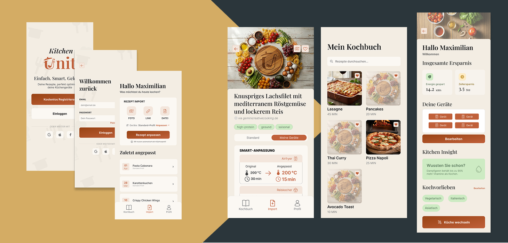
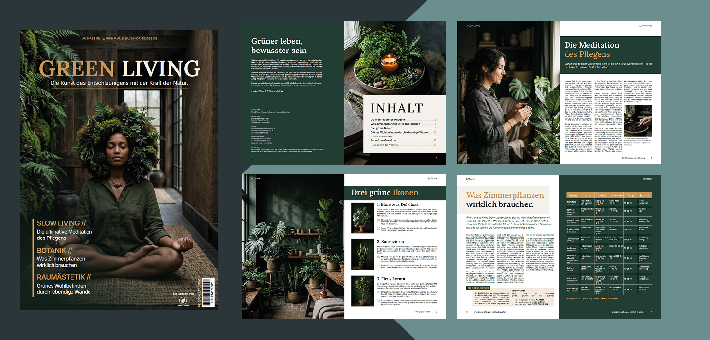
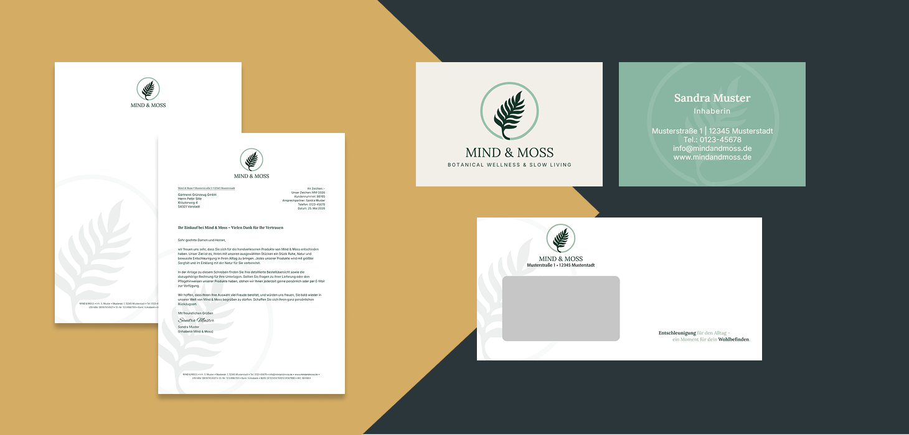
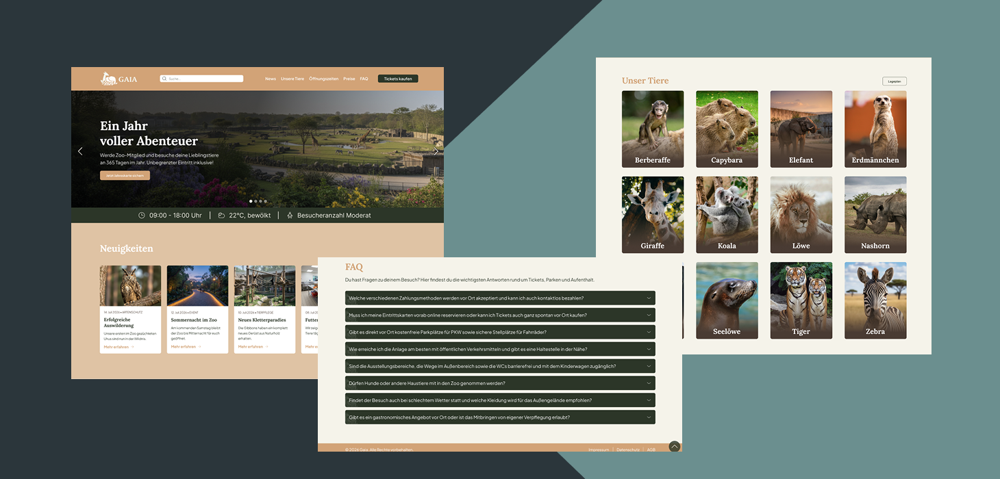

- User Research & Personas: Nutzerbedürfnisse analysieren und Zielgruppen definieren.
- Wireframing & Prototyping: Erstellung von Low-Fidelity bis High-Fidelity Entwürfen.
- Usability Testing: Erkennen von Usability-Problemen durch gezielte Nutzertests.
Projekt: Konzeption einer mobilen App-Schnittstelle von der ersten Nutzerbefragung bis zum klickbaren Prototypen.
Zertifikat ansehenUX/UI Projektergebnis

Klicken zum Vergrößern
Interaktiver User Flow (Video)
- Layout & Typografie: Satzbau, Gestaltungsraster und der bewusste Umgang mit Schriftarten.
- Bildbearbeitung & Vektoren: Professionelle Composings in Photoshop und Vektorgrafiken in Illustrator.
- Medienproduktion: Erstellung druckfähiger Daten sowie optimierter Assets für digitale Kanäle.
Projekt: Konzeption und Umsetzung einer medienübergreifenden Branding-Kampagne inklusive Corporate Design und Print-Assets.
Zertifikat ansehenKreatives Gesamtkonzept & Branding

Klicken zum Vergrößern

Klicken zum Vergrößern
- Programmierlogik: Variablen, Schleifen, Funktionen und objektorientierte Ansätze.
- DOM-Manipulation: Dynamisches Ändern von HTML-Inhalten und CSS-Styles per Klick oder Scrollen.
- Event Handling: Abfangen von User-Interaktionen (Klicks, Tastatureingaben, Touch-Events).
Projekt: Programmierung einer interaktiven Web-Applikation mit dynamischer Filterfunktion und animierten UI-Zuständen.
Zertifikat ansehenFunktionale Logik & Dynamisches UI
Interaktive Features in Aktion (Video)
- Component Architecture: Erstellung komplexer, variantenreicher UI-Komponenten mit logischen States.
- Design System Governance: Systematischer Aufbau von Bibliotheken mit Styles und Tokens.
- Advanced Microinteractions: Planung feinsinniger Übergänge und responsiver UI-Animationen.
Projekt: Konzeption eines vollständigen High-Fidelity Design Systems für eine komplexe Multi-Plattform-Applikation.
Zertifikat ansehenPixelperfektes UI-System

Klicken zum Vergrößern
Interaktiver User Flow (Video)